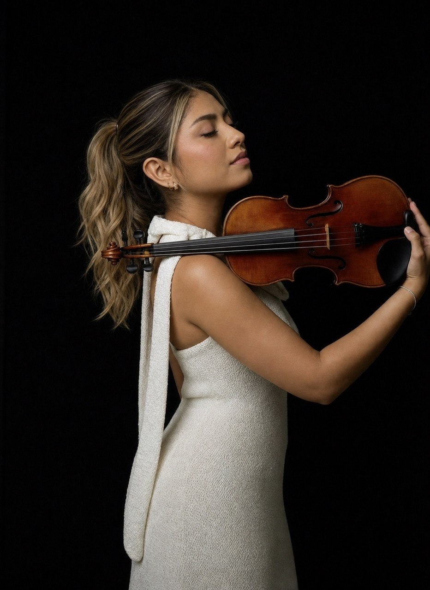
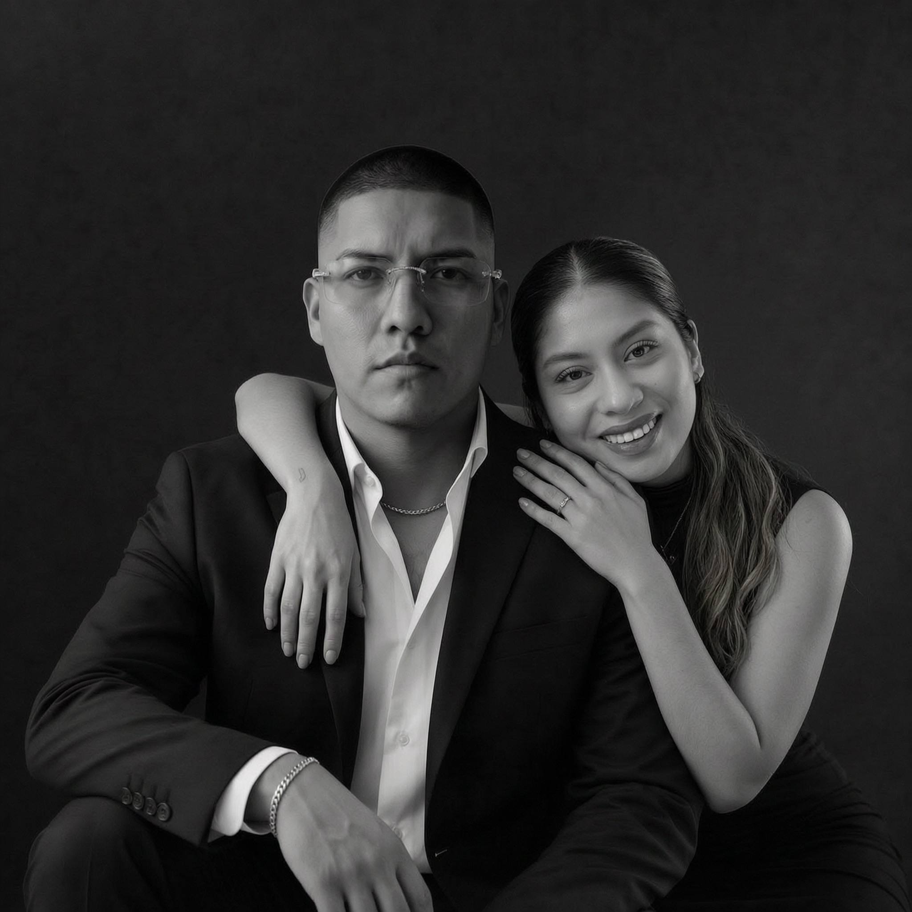

01
Más de 10 años de trayectoria
Del aula al escenario: una década construyendo oficio, repertorio y una manera propia de sonar.
Más de una década uniendo el rigor del escenario clásico con una pedagogía que respira emoción. Cada nota es una conversación entre el corazón y quien escucha.

Del aula al escenario: una década construyendo oficio, repertorio y una manera propia de sonar.

Más de 150 alumnos formados con un método que ordena la técnica sin apagar la voz de cada persona.

El violín fuera de su caja: clásico, adoración y contemporáneo conviviendo en un mismo lenguaje.

Más de 40 conciertos, recitales y ceremonias donde la música sostiene el momento, no lo interrumpe.

Material, digitaciones y arreglos escritos clase a clase. Nada genérico: todo pensado para tu mano.
Descubrí temprano que el violín no era un instrumento: era una voz. Hoy la uso para enseñar, acompañar y sostener momentos que importan.
Desde niña entendí que cada arcada podía decir algo que las palabras no alcanzaban. Esa certeza me llevó del estudio disciplinado al escenario, y del escenario al aula.
Trabajo con estudiantes de todos los niveles: desde quien toma el violín por primera vez hasta músicos que buscan pulir sonido, afinación y presencia. No enseño un molde; ordeno la técnica para que aparezca la voz propia de cada alumno.
En paralelo acompaño bodas, cultos, recitales y eventos privados en Guayaquil y alrededores, donde la música tiene que servir al momento y no robárselo.

Este sitio nace en casa. Alan, esposo de Enny, es desarrollador de software con años de experiencia en inteligencia artificial, y se encarga de la parte técnica y digital del proyecto.
Formación personalizada, presencia en escena y sesiones intensivas. Todo empieza con una conversación.
Presenciales u online, para todos los niveles. Técnica, repertorio y expresión adaptados a tu ritmo y a tu objetivo real.
Bodas, cultos, cenas, ceremonias y eventos corporativos. Repertorio elegido contigo y ensayado para el momento exacto.

Sesiones enfocadas en sonido, afinación, vibrato y presencia escénica para músicos que ya tocan y quieren dar el salto.
Escenario, estudio y ensayo. Pasa el cursor sobre cada imagen.
En escenarioEditorial RetratoPartiturasConcierto
RetratoPartiturasConcierto EnsayoInterpretando
EnsayoInterpretandoLo que le digo a mis alumnos, escrito para que puedas releerlo el día que lo necesites.
La técnica no es el fin, es el camino. Cuando el instrumento deja de estorbar, aparece el arte.
Leer artículo →No importa cuántas horas practicas, sino cómo. Los principios que uso para acelerar el avance real.
Leer artículo →Todos los sentimos. Lo que hago antes de salir a tocar para convertir el nervio en energía y no en bloqueo.
Leer artículo →Cuéntame tu nivel y tu objetivo. Te respondo en menos de 24 horas con un plan concreto.